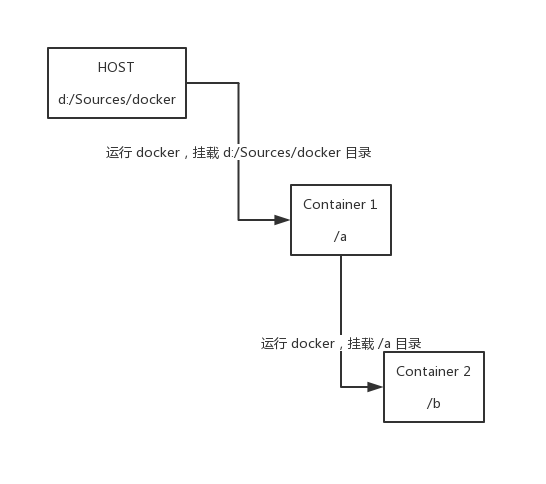
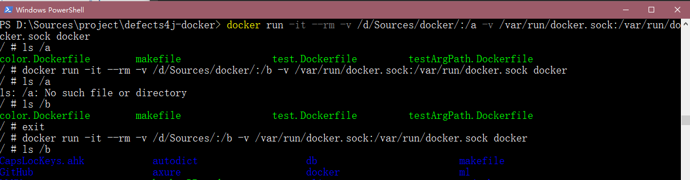

Mount volume to a docker container running in a docker container
一个匪夷所思的需求
有时候我们需要在 docker container 里面运行一个 docker container（虽然都是运行在宿主机的 docker daemon 里的），这个其实使用 -v /var/run/docker.sock:/var/run/docker.sock 就能做到了。本文的重点是下面这种情况：

也就是说，我们想让最里层的 container 2 和中间的 container 都能够访问宿主机上的一个目录。
在 linux 下的实现方法
这个其实非常简单，只需要在运行 docker 的时候使用宿主机的目录即可：
1 | ~ # docker run -it --rm -v ~/your-path/:/a -v /var/run/docker.sock:/var/run/docker.sock docker |
由于在 container 1 中调用 docker cli 是直接访问的宿主机的 docker daemon，因此可以挂载宿主机上的任意一个路径。这里要注意的是，即使是在 container 1 中运行的 docker cli，在使用 -v 挂载路径的时候指定的也是宿主机里的路径，而不是 container 中的路径。
在 windows 下的实现方法
(我只在 docker-desktop (linux 容器) 里实验过，不保证在其他版本里也能用。)
由于 container 1 中只能接收 linux 格式的路径，只需要把类似于 d:/Sources 这样的格式换成 /d/Sources 即可：


本作品采用 署名-相同方式共享 4.0 国际 进行许可。欢迎转载、使用、重新发布，但务必保留文章署名 “不科学的科学君” (Liu233w) 与博客链接： https://liu233w.github.io ，基于本文修改后的作品务必以相同的许可发布。如有任何疑问，请 与我联系 。